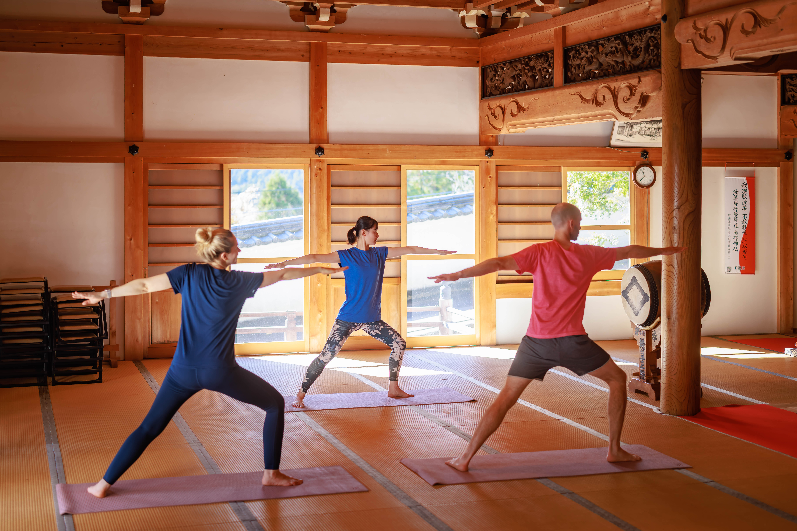

Yoga Retreat to Reconnect with the Present Moment and Reflect on the Heart Within
Set within the sacred grounds of a centuries-old temple, this Zen Temple Yoga Retreat offers a rare opportunity to attune the senses and find harmony with nature. Immersed in spiritual heritage, guests are invited to slow down, be present, and rediscover their inner self.
Retreat Highlights
-

Authentic Zen Yoga Retreats in Temples with Deep History and Tradition
Some of the temples partnered with OTERA STAY are steeped in over 1,000 years of history and tradition, while others are located along UNESCO World Heritage routes or house national treasures such as historically significant Buddhist statues and ink wash paintings. Many of these temples are surrounded by nature, offering sacred, tranquil spaces where guests can connect deeply with Japanese culture and history. Practicing yoga in such serene temple settings provides a rare opportunity to look inward and reset both mind and body—making for a truly transformative experience.
-

Nourishing Meals Made with Local Ingredients to Restore Mind and Body
Meals feature both shojin ryori (traditional Buddhist vegetarian cuisine) and local specialties. Each dish is crafted using seasonal, locally sourced ingredients that are gentle on the body and highlight the natural flavors of the produce. Taking the time to eat mindfully is itself an act of self-care—an opportunity to reflect and reconnect with both body and mind. By enjoying your meal slowly and in silence, we invite you to experience a deep sense of fulfillment often overlooked in the rush of daily life.
-

Temple Stays and Space Rentals Available for Individuals and Groups Up to 100 Guests
Programs can be arranged for solo travelers or groups of up to 100 people. From multi-day immersive stays to one-time yoga sessions under temple eaves, each experience is uniquely curated to harmonize body, mind, and spirit.
• Overnight yoga retreats: Select from over 13 sacred temples nationwide
• Yoga space-only rentals: Available at over 60 temples across Japan
EXPERIENCES
-

Zen Meditation
Practicing meditation has been shown to reduce stress, improve concentration, enhance emotional regulation, and promote better sleep quality. In the long term, it has also been reported to improve immune function and relieve chronic pain, contributing not only to mental well-being but also to physical health.
-

Copying sutras
Copying sutras is the practice of carefully transcribing Buddhist scriptures, copying each character one by one with mindfulness. Traditionally performed as a form of Buddhist training, it offers time to calm the mind and deeply contemplate the meaning of the scriptures through the act of writing. In modern times, regardless of religious background, it is valued as a meditative practice that fosters concentration and inner stability.
-

Tea Ceremony
The Japanese tea ceremony refers to the traditional practice in which a host prepares and serves matcha to guests in accordance with established etiquette. The guest receives and enjoys the tea while appreciating the host's hospitality. However, tea ceremony is not simply about serving and drinking tea. It is a comprehensive art form that emphasizes spiritual connection between host and guest. This practice blends philosophy and aesthetics through various elements: the design of the tearoom and garden, interior arrangements, the careful selection and appreciation of tea utensils, the meal served, and the precise procedures of tea preparation.
-

Samu
Samu refers to the mindful labor carried out in Zen temples, such as cleaning, tending to the garden, and handling daily chores. While these tasks—like sweeping, weeding, and maintaining the temple grounds—may appear simple at first glance, samu is far more than just manual labor. It is a form of Zen practice that emphasizes focusing completely on the "here and now." By engaging in these tasks with a clear mind and full awareness, practitioners transform ordinary daily work into a path of spiritual cultivation.
Accommodation/Space Rental


Temple Hotel Houkou-Ji
Houkou-Ji is located in Hamamatsu City, Shizuoka Prefecture, approximately 2 hours and 30 minutes by train from Tokyo. The temple grounds are spacious, featuring a three-storied pagoda and a statue of the Shakyamuni Triad that has been designated as an Important Cultural Property of Japan. The temple can accommodate a wide range of group sizes—from as few as 10 people to as many as 200 participants.


Temple in Minobu
There Are Five Temple Hotels in Minobu, Yamanashi Prefecture. These temple accommodation are located within the grounds of Minobusan Kuon-ji, a sacred power spot tucked away in the mountains. With over 700 years of history, this spiritually significant site houses numerous cultural treasures, including the National Treasure "Silk Scroll Painting of a Summer Mountain Landscape" as well as various other artifacts designated as Cultural Properties by Yamanashi Prefecture.


What Past Attendees Say
-

Major Yoga Company
Temples and yoga are a perfect match, and we finally made it happen. We practiced yoga in the private main hall, refreshing both mind and body in our exclusive space. It was an excellent event where we could immerse ourselves in yoga all day in a natural setting. We will definitely do this again.
FAQ
Frequently Asked Questions
- Do you provide yoga mats and yoga blocks?
- Yes, we provide yoga mats and yoga blocks for all participants. Please let us know if you have any special requirements.
- Can I request meals that are vegan, pescatarian, or free of ingredients restricted by my religion?
- Absolutely. We can accommodate various dietary preferences and restrictions including vegan, pescatarian, and religious dietary requirements. Please inform us of your needs when making your reservation.
- Can beginners join the yoga retreat?
- Yes, beginners are very welcome! Our yoga sessions are designed to accommodate all levels, from complete beginners to experienced practitioners. Our instructors will provide modifications and guidance as needed.
- How long does it take from inquiry to confirmed reservation?
- Typically, we aim to confirm your reservation within 2-3 business days after receiving your inquiry. However, during peak seasons or for large groups, it may take a bit longer as we coordinate with the temples.
- Can I change the check-in and check-out times?
- Yes, flexible check-in and check-out times can be arranged. Please discuss your preferred times with us when making your reservation, and we will coordinate with the temple to accommodate your schedule whenever possible.
- Can I store my luggage before check-in or after check-out?
- Yes, most temples can store your luggage before check-in and after check-out. Please let us know in advance if you need this service.
- Is parking available? If so, is there a fee?
- Parking availability varies by temple. Most temples offer free parking on their grounds, but some may have limited spaces or be located in urban areas where parking is restricted. Please inquire about parking when making your reservation.
Ready to Experience a Zen Temple Yoga Retreat?
we'll create a personalized experience tailored to your needs.
Download our resources to learn more, or contact us directly to begin planning your temple yoga retreat.